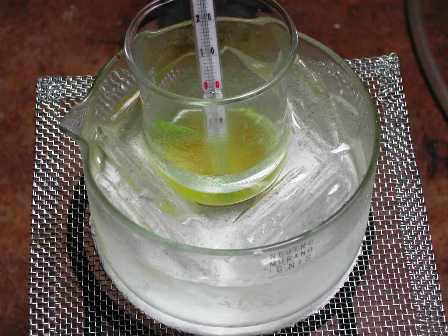
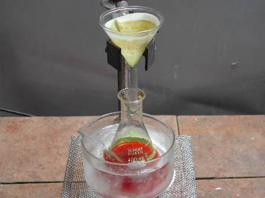
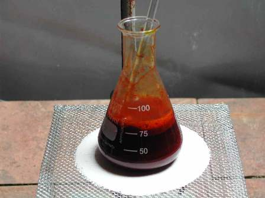
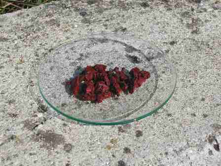

Se all'esame ti chiedessero: -"parlami della chimica del carbonio..." sicuramente non sapresti dove iniziare, perchè nella risposta ci sta tutto, e ancora di più.
Essendo questo l'oceanico argomento del sedicesimo Carnevale della Chimica ospitato sul sito Scientificando di Annarita, mi son detto che nel tutto ci sta anche la sintesi del mio ultimo colorante, che con la chimica del carbonio ha a che fare, non c'è dubbio.
Era un po' di tempo che volevo sporcare un po' di vetreria facendo un colorante azoico, ma mi serviva una sostanza inedita (naturalmente sapendo che non c'è assolutamente nulla di chimicamente inedito che sia fattibile in un home-lab!).
Ma con questa parola intendevo preparare una sostanza che non fosse già commercialmente usata genericamente per tingere, nè ora nè in passato.
In breve, qualcosa che non si trovasse nella bibliografia dei coloranti.
Poi, guardando per caso la sintesi del Giallo Alizarina GG ho trovato una possibile variante...
Regista, raduna gli attori per la sceneggiata di oggi!
Preparazione dell'
Acido 3-(4-nitrofenilazo)-5-nitro-2-idrossibenzoico
Partecipano alla commediola (in ordine di apparizione):
- p-nitroanilina NH2-C6H4-NO2
- acido cloridrico HCl
- acido 5-nitrosalicilico NO2-C6H3(OH)-COOH
- sodio carbonato Na2CO3
- sodio nitrito NaNO2
- ghiaccio q.b.
- vetreria opportuna
E questo è il cartellone dello spettacolo:


Porre in una beuta da 100 ml 5 g di p-nitroanilina e riscaldando cautamente mescolando aggiungere goccia a goccia HCl conc. fino a solubilizzazione completa.Si forma in tal modo il cloridrato dell'ammina, che per raffreddamento cristallizza.
Versare in 100 ml di ghiaccio tritato e aggiungere a piccole porzioni 5 g di sodio nitrito, mescolando ogni volta e badando che la temperatura non salga oltre i 5-8°.
Mescolare e poi lasciare in riposo qualche tempo finchè la diazotazione sia completa e la soluzione sia il più possibile limpida.
Si forma così il cloruro di p-nitrodiazobenzene.

Nel frattempo in un becker da 250 ml sciogliere 15 g di Na2CO3 in 200 ml di acqua e aggiungere 5 g di acido 5-nitrosalicilico mescolando fino a salificazione e soluzione completa.Serve molta acqua poichè il sale è poco solubile a freddo; raffreddare in ghiaccio e mescolando far gocciolare in questa la prima soluzione, magari filtrando come si vede in foto.

Si forma prima un intorbidamento e poi un precipitato rosso scuro; lasciar riposare un paio di ore fino a reazione completa e poi portare a pH neutro con la giusta quantità di HCl.In tal modo si evitano perdite per solubilizzazione del sale sodico e si può recuperare più prodotto.
Filtrare su buchner, lavare con acqua fredda e lasciar seccare all'aria.
La copulazione avviene in orto rispetto al gruppo attivante (-OH) perchè la posizione p- è già occupata dal gruppo -NO2 e il legame con l'azoto si accorda anche con la situazione meta-orientante del medesimo gruppo nitro.
Il colorante si presenta come una polvere marrone scuro, quasi del tutto insolubile in acqua e solubile nei solventi organici.
La soluzione molto diluita è gialla in ambiente acido e color amaranto in ambiente alcalino.
Avendo eseguito la sintesi partendo da un quinto delle quantità indicate, le perdite nei vari passaggi sono in proporzione molto elevate e quindi non ha molto significato mettere la resa percentuale rispetto al teorico.
Lo scopo era solo quello di "vedere" un azocomposto nuovo con due gruppi nitrici; me lo aspettavo giallo, mentre la tonalità riscontrata è invece molto più sul rosso.
La "prova al fuoco" conferma invece la presenza dei due gruppi -NO2 con una combustione ricca e vivace.
Il potere colorante, relativamente a questi composti e alla prima impressione che ho avuto, è che non sia eccelso.
Adesso, per l'importanza che possono avere questi dati, lo sappiamo...
Gli attori, dopo aver letteralmente dato tutto se stessi (!), si ritirano lasciando sul vetrino un pizzico di Acido 3-(4-nitrofenilazo)-5-nitro-2-idrossibenzoico, unica ma preziosa testimonianza del loro sacrificio.

Ehi, di là c'è ancora il minerale di Montevecchio che non vede l'ora di svelarci il suo contenuto...
Calma, abbi pazienza un attimo, arrivo fra qualche giorno e ti butto nell'acido!